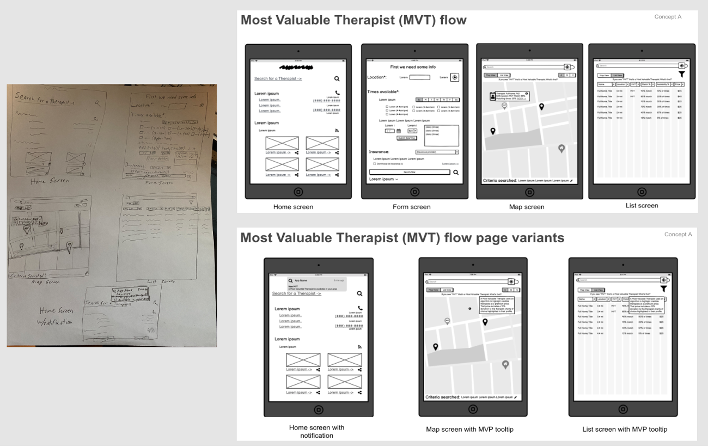

Automation
I specialize in UI automation on iOS (Swift), Android (Kotlin), Web (JavaScript, Python, C#) and API automation (C#, JavaScript). Tools include Xcode, Android Studio, Visual Studio Code, and Postman.

This role represents my most extensive experience and where my skills truly shine. If project risk is a priority, then this is the position you should be seeking to fill. I consider this role to be “the glue that holds teams together.” I bring a unique combination of passion for technology, customer satisfaction, and a natural aptitude for testing.
With expertise in various testing roles, such as Quality Assurance Engineer (QAE), Quality Assurance (QA), Software Development Engineer in Test (SDET), and Software Test Engineer (STE), I am well-versed in both manual and automated testing practices. My adaptability to different titles stems from the breadth of my experience and the type of testing work involved.
I am seeking a leadership position where I can make significant contributions by delivering a comprehensive test suite, leveraging automation when appropriate, and mitigating project risks effectively.
I specialize in UI automation on iOS (Swift), Android (Kotlin), Web (JavaScript, Python, C#) and API automation (C#, JavaScript). Tools include Xcode, Android Studio, Visual Studio Code, and Postman.
I use methods such as ad-hoc, boundary, and root-cause analysis to identify test scenarios and cases. I will have these reviewed with stakeholders, continue to improve and prioritize them.
I have a passion for delighting customers of software I test and to help ensure a variety of users can enjoy it I check Vision, Hearing, Motor, and Learning accessibility.
I am always reviewing software for optimal performance. I look at load balance, KPIs, and stress testing. I've used tools such as Postman, Lighthouse, PSI, and Grafana k6.
Hello, hola, שׁלום, こんにちは! I have worked on software that needs to be compatible in multiple languages and across the world. As a result, I know to check for different formatting (e.g., currency and date-time), layout, cultural and language nuances.
Data from a server may not always ready for viewing and it can be valuable to test different characters and lengths. To help test early (shift left approach) mock data can be used during testing.
Having tested 20+ devices with different operating systems, browsers, and hardware and observing user interaction I understand distinctions important to test (e.g., connectivity, accessory support).
Privacy and data protection are critical to help give customers confidence in the software they are using. I worked with authentication, cookies, encryption, and conducted risk analysis to help protect users.
While test cases serve as a valuable tool for strategizing and documenting regression suites, I also employ session-based charter testing, or "charters," for focused and exploratory testing. This approach allows for flexibility and adaptability while gaining insights into test time and risk areas. Additionally, I utilize equivalence partitioning to categorize test cases into equivalent classes, effectively reducing the overall number of test cases.
I utilize RCA to identify the root cause of defects by analyzing data and employing problem-solving methods. For example, if a defect stems from a coding error, RCA aims to uncover the underlying cause, such as a lack of code review or inadequate testing processes. Implementing corrective actions based on RCA helps mitigate similar issues in the future.
I enjoy organizing and leading bug bashes. These events allow for a variety of people including testers, developers, designers, and stakeholders, to come together to help identify issues. It is time-bound, focused on exploring, and can be fun with food and prizes. After the bash, issues are triaged with the team to help improve software before release.
To help understand scenarios and catch edge cases I've found it helpful to create diagrams. Also, to help set consistency with tickets, ticket flows, and documentation I enjoy creating templates for the team.
When I hear the term "Developer" it often brings to mind the iconic image of Steve Ballmer passionately exclaiming "Developers, Developers, Developers!". While I possess a strong background in development, I have found immense satisfaction in utilizing my knowledge to excel as a software tester. This role has not only allowed me to expedite my learning of new programming languages, including automation frameworks, but also enabled me to collaborate effectively with developers to identify and resolve issues, elevating the overall code quality.
I learned some basic programming a child with HyperCard. In high school, I become a proficient typist, was in Technology Club, and learned HTML and JavaScript to make a website for my class, for all the Erics online, and NFTY NW. During my college years, while pursuing a major in Management Information Systems (MIS) and a minor in Computer Science (CS), I further expanded my repertoire, delving into C++, ASP, ASP.NET, CSS, XML, and web services. Additionally, I leveraged my expertise to create and update websites for the school recreation center, Hillel, a DJ, and a cookie jar company. Notably, my coursework involved developing a mock e-commerce CD store resembling Amazon.com, complete with a dynamic wishlist feature.
Throughout my professional journey, I have continuously expanded my skill set, acquiring proficiency in various programming languages and technologies. I have garnered experience in shell scripting, bash, AppleScript, VBScript, Objective-C (developing a Cocoa testing application), Swift, Ruby, Java (building an Android application), Kotlin, Python, and C#. Additionally, I have delved into the realm of AI/ML, creating chatbots for internal use and gaining work.
With my passion for delighting customers and sharing creative ideas, I have always been fascinated with the User Experience Designer role. As a participant and seeing usability studies during my career I see the value they can bring. In 2022, I received a University of Washington certificate in UX Design. The program included 3 courses learning the following:
When initiating a new project, it is important to comprehend the (potential) problem(s) that the team intends to address for the end user. By harnessing the power of both data and intuition, I am able to acquire a comprehensive understanding of the user challenges and devise impactful solutions that effectively cater to their needs.
To gain insights into relevant past experiences, conducting interviews is crucial. I prepare by creating an outline, identifying diverse interviewees, and crafting unbiased questions, including a mix of open-ended and required ones. With a consent form and recording tool, I actively listen during interviews, encouraging honest responses with pauses. Afterwards, I review notes and recordings, extracting meaningful quotes and capturing essential details. If appropriate, I follow up with interviewees for further discussions.
Reviewing interview data can help identify archetypes and personas. I look at broad patterns and characteristics to identify archetypes. These might be common traits, motivations, and behaviors. With these archetypes I create fictional users as personas to help identify target audiences to stakeholders.
Using journey mapping, I visualize the user experience from start to end, incorporating personas, data, research, and stakeholder input. This comprehensive approach captures touchpoints, emotions, pain-points, thoughts, and actions, guiding design decisions and improvements for best-in-class experiences that exceed user expectations.
Brainstorming is a valuable technique I enjoy for generating and iterating ideas towards potential solutions. It involves exploring different words associated with the problem statement in a supportive and diverse team setting. Promising ideas/words are selected, further brainstorming may occur on specific sub-topics, and a word cloud image can be created to visualize the collective insights.
Based on gathered research, I create a feature list and collaborate with the team to visualize the effort and impact of each feature using an Effort-Impact grid. Additionally, to establish a navigational sitemap with user-friendly labels and hierarchy, I employ the UX technique of card sorting, which involves engaging users in organizing and categorizing content.
To establish the desired design aesthetics for a project, I create a mood board—a curated collection of visuals, such as drawings, photos, audio, and text. This serves as a reference point for establishing the project's brand identity, including the logo, voice, and tone. It also forms the foundation of an essential design system, encompassing accessible typography, controls (atoms, molecules, & organisms), and grids. Regular review and iteration with stakeholders ensure alignment and refinement.
During the project's early stages, I create low-fidelity prototypes to focus on functionality, using paper or digital tools without specific visual details. As the design system is established, I transition to high-fidelity prototypes resembling the final product, including visual richness, interactive transitions, and elements addressing user pain points. All prototypes undergo diverse scenario-based user testing and iterative improvements based on feature prioritization, schedule constraints, and user feedback. Careful consideration is given to the impact of iterations on other team members involved in the project.
I took the problem statement of finding a therapist to eventually build an interactive iPad app prototype in Figma. This prototype not only addressed pain points in the user journey, but also showcased the intuitive features and functionalities that would assist individuals in discovering the right therapist for their needs. Feel free to download my presentation about this process or review my coursework methods.
Low-fidelity screenshot:

As I've progressed in my career, I have embraced a leadership role within the realm of software testing. This growth aligns with my early achievements, such as attaining the highest rank of Eagle Scout, which represents the pinnacle of accomplishment in the Boy Scouts of America. During my high school years, I held the role of President in my youth group, fostering my aptitude for effective management and teamwork. Building upon these foundations, my college degree provided me with invaluable insights into various management principles and practices.
I derive great satisfaction from supporting and assisting others, as it not only contributes to the growth and success of those around me, but also serves as a continuous source of personal growth and learning. By assuming leadership responsibilities and leveraging my expertise as a software tester, I am able to make a meaningful impact while further enhancing my skills and knowledge in the field.
As a professional, I have had the privilege of undertaking diverse leadership roles. I have served as a Scrum Master, guiding and empowering cross-functional teams to achieve their project objectives efficiently and effectively. Additionally, I have taken a leadership role at ticket triage meetings and bug bashes, ensuring seamless issue resolution and promoting collaborative problem-solving among team members. Alongside these responsibilities, I have had the opportunity to coach and mentor fellow staff, nurturing their skills and fostering a culture of continuous improvement.
Engaging in these leadership endeavors has proven to be enjoyable, witnessing the positive impact of my guidance and support on the team's performance and individual growth. This includes leading QA meetings of 10+ participants on an international product team of 100+, sharing valuable insights and delivering impactful demos. These experiences have not only enhanced my professional development, but also reinforced my passion for fostering collaboration, enabling me to meaningfully contribute to the success of both individuals and the organization as a whole.